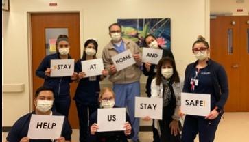

Hospital Staff Vs. Covid-19
Hospital staff literally had to battle against Covid-19 not just on the health section but also financially and emotionally. Since many services begun to get cancel, staff had to be reduced. A large amount of our staff had to immediately apply for edd benefits. Employess who shared offices were separated into designated spaces or sent home completely till futher notice. On the other hand employees that were in fact still employed by the hospital had to sleep either in the On-call room or hotels that were offered by the hospital since we couldnt go home because of the fear to infect our own loved ones. employee were emotionally drained all wishing for just one small hope of normality. Many tips were shared to help us maintain our sanity throughout all the chaos.
